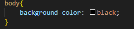

A tag background-color do CSS é utilizada para definir a cor de fundo de um elemento HTML. Ela permite que você especifique a cor que será aplicada como fundo de um determinado elemento, como um parágrafo (p), uma divisão (div), um cabeçalho (h1), entre outros.
| Código |
|---|
|  |
| Site |
|